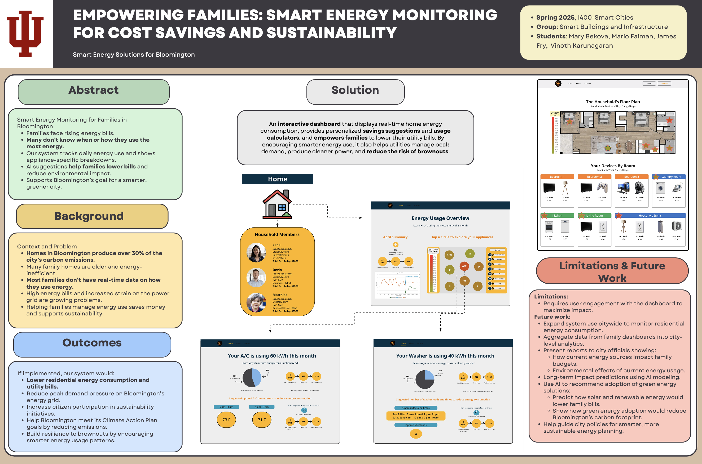

Personal work portfolio containing past projects, work experience, and other relevant information about myself!
This is a project me and 3 partners worked on over the course of my senior year in college at the Luddy School of Informatics, Computing and Engineering at Indiana University.
Our goal centered around trying to create a one stop shop for all things parking related at IU for students, faculty and visitors.
We used a variety of components such as PHP, Javascript, MySQL, Leaflet and more. Our finished product was presented at the Capstone Fair for faculty and students to see and interact with.
Check out the project here!This project was for an elective called Smart Cities where myself and 3 other peers worked to create a home energy monitoring solution for Bloomington households.
We presented our project to other peers as well as created a short video to explain the premise of the design and project itself.
The dashboard itself was created using figma and miro boards, and while it was never fully functional in terms of a live site or application, it highlights many of the ideas and concepts learned in this great elective class in my senior year!
